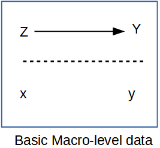
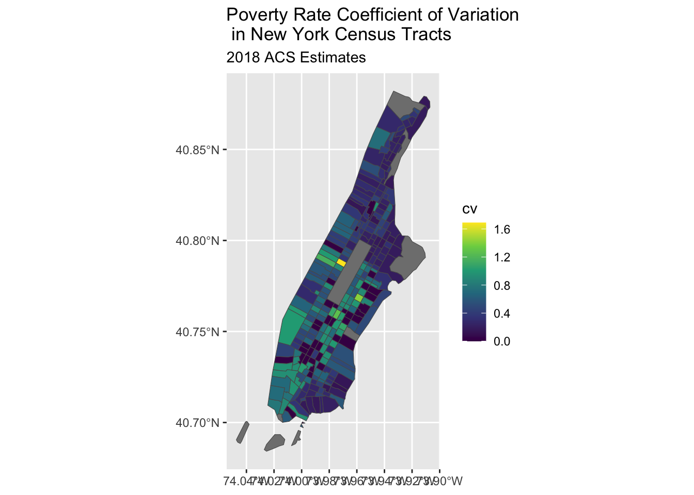
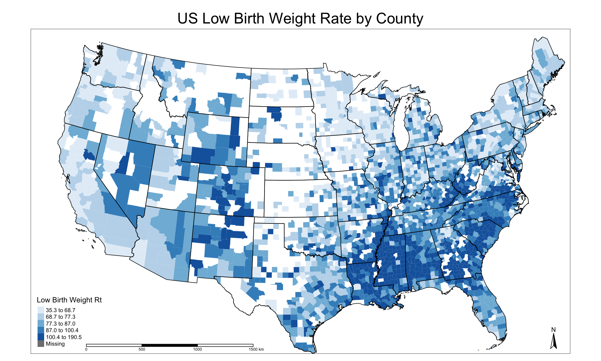
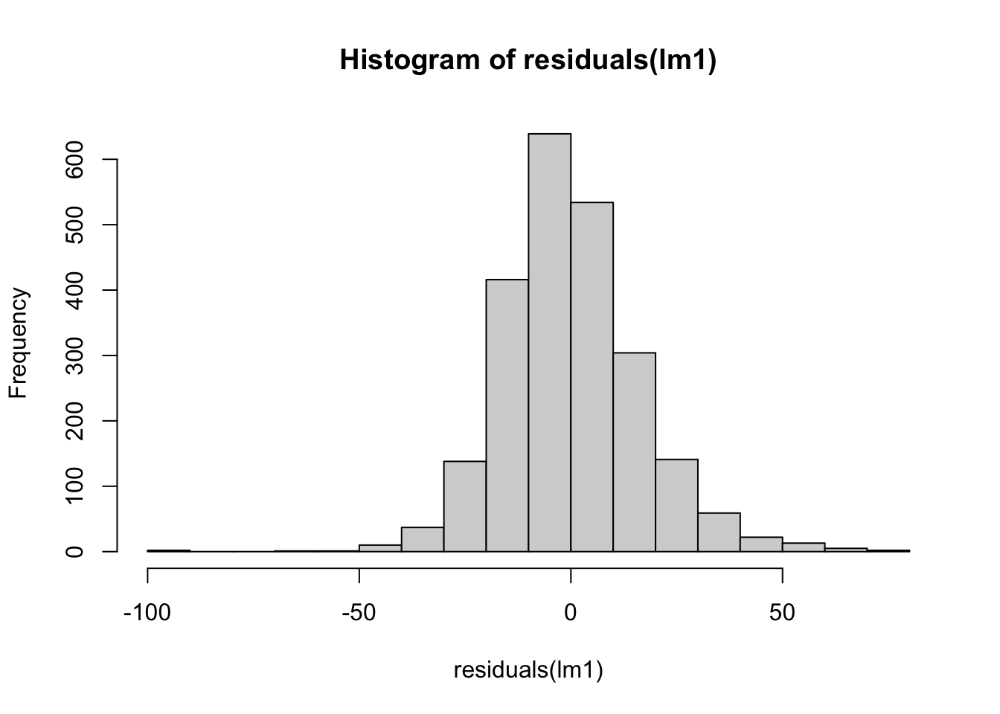
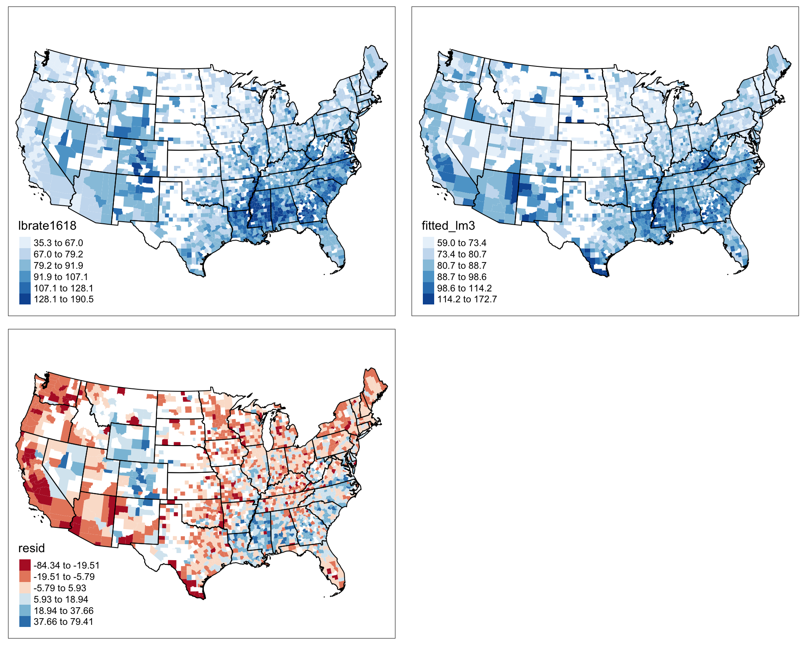

Prior to the advent in the 1960’s of large scale social surveys like the General Social Survey (GSS), most demographic research was done not on individuals but on aggregates, because that’s how data were available. If you look at texts such as Keyfitz (1968), all of the examples are for national level calculations, and many nations did not have sufficient data availability to produce quality statistical summaries of their populations, resulting in publications such as the United Nations Population Division’s famous Manual X (1983), which gave pragmatic formulas to measure a wide variety of demographic indicators at the national level using basic inputs, usually available from census summaries.
Paul Voss (2007) describes most demography (and certainly most demographic studies prior to the 1970’s and 1980’s) as Macro demography. Voss also mentions that prior to the availability of individual level microdata, all demography was macro-demography, and most demographic studies were spatial in nature, because demographic data were only available in spatial units corresponding to administrative areas. Typical types of geographic areas would be counties, census tracts, ZIP codes, state or nations.
In the macro-demographic perspective on demography, observations are typically places, areas, or some other aggregate level of individuals. We do not observe the individual people themselves often times. An example of this is if you were to have access to an aggregate count of deaths in a region, even if the deaths were classified by age and sex, you still would be dealing with data that ignores, or has no index to the more nuanced characteristics of the individual decedents themselves. That being said, data such as these are invaluable, and most demographic summaries of individual-level data would aggregate based on the characteristics of the individuals any way. The macro scale principal is illustrated below, where all of the variables we observe are a scale above the individual person.

Macro Level Proposition
Such macro-level propositions are hypothesized relationships among variables (\(\rightarrow\)) measured at a macro scale (\(Z\) and \(Y\)), which ignores individual level data, mostly because we don’t observe individuals (\(x\) and \(y\)) in many of these kinds of analysis.
If all we looked at were the individuals within the population, we would be overwhelmed by the variation that we would see, and we wouldn’t be doing statistics anymore, we would be trying to process a million anecdotes, and the plural of anecdote is not data. By aggregating across basic demographic groups, such as age and sex, demographers begin to tease apart the differences that we are interested in. If we go a little further and, data willing, aggregate not only across these fundamental demographic groups, but also across some kind of place-based areal unit, then we adding an extremely important part of human existence: the where part of where we live.
This presents an attractive view of populations and typically data on places are more widely available, but there are caveats we must be aware of. If we are using purely aggregate data in our analysis, meaning that we do not have access to the individual level microdata, then our ability to observe variation within a place is extremely limited, if not impossible.
The goal of this chapter is to illustrate how places are a special unit of analysis, and the types of data we often see at the place level are very different from individual level surveys. Additionally, the analysis of place-based data is similar to survey data in that places are do not necessarily represent random observations, and so analyzing data on places often requires special modifications to statistical models. In this chapter, I show how the the linear regression model can be expanded in several ways and illustrate the generalized linear model as a very useful and extendable tool to analyze data on places and especially when we are analyzing rates as demographers often do.
5.1 Getting data on places
In the macro-demographic perspective on demography, observations are typically places, areas, or some other aggregate level of individuals. We do not observe the individual people themselves often times. An example of this is if you were to have access to an aggregate count of deaths in a region, even if the deaths were classified by age and sex, you still would be dealing with data that ignores, or has no index to the more nuanced characteristics of the individual decedents themselves. That being said, data such as these are invaluable, and most demographic summaries of individual-level data would aggregate based on the characteristics of the individuals any way. The macro scale principal is illustrated below, where all of the variables we observe are a scale above the individual person.
Macro Level Proposition
Such macro-level propositions are hypothesized relationships among variables (\(\rightarrow\)) measured at a macro scale (\(Z\) and \(Y\)), which ignores individual level data, mostly because we don’t observe individuals (\(x\) and \(y\)) in many of these kinds of analysis.
If all we looked at were the individuals within the population, we would be overwhelmed by the variation that we would see, and we wouldn’t be doing statistics anymore, we would be trying to process a million anecdotes, and the plural of anecdote is not data. By aggregating across basic demographic groups, such as age and sex, demographers begin to tease apart the differences that we are interested in. If we go a little further and, data willing, aggregate not only across these fundamental demographic groups, but also across some kind of place-based areal unit, then we adding an extremely important part of human existence: the where part of where we live.
This presents an attractive view of populations and typically data on places are more widely available, but there are caveats we must be aware of. If we are using purely aggregate data in our analysis, meaning that we do not have access to the individual level microdata, then our ability to observe variation within a place is extremely limited, if not impossible.
The goal of this chapter is to illustrate how places are a special unit of analysis, and the types of data we often see at the place level are very different from individual level surveys. Additionally, the analysis of place-based data is similar to survey data in that places are do not necessarily represent random observations, and so analyzing data on places often requires special modifications to statistical models. In this chapter, I show how the the linear regression model can be expanded in several ways and illustrate the generalized linear model as a very useful and extendable tool to analyze data on places and especially when we are analyzing rates as demographers often do.
5.2 Getting data on places
Typically when thinking about data on places, we are really referring to some sort of administrative geography, such as nations, states, region, and census tracts. While these are often readily available (and I’ll show some R package that can easily get data from the web), we often have to use these as proxy measures of more interesting social spaces like neighborhoods and other types of activity spaces. These social spaces are harder to get data on, typically because they are more fluid in their definitions, and there is generally not a systematic effort to produce data on socially defined spaces on national scales. This is a big part of doing macro demography, defining the scale and the unit of analysis, both because we need to define the scope of our work, but also we are very much constrained by the availability of data for our projects. For instance, I may want to look at national scale inequality in mortality risk in neighborhoods in the United States, but you immediately face a couple of hurdles. No national data source identifies sub-city residential location for death certificates, also, what are neighborhoods? Again, they’re probably some socially defined space that may not be available from a national scale source. To get around this, we may have to settle for a state-level analysis, because state vital registration systems will often allow researchers to use more fine-scale geographic data on death certificates (such as latitude/longitude of the decedent’s residence), and once we have very fine scale geographic data on the vital events, we could potentially find data on some more socially defined spaces, perhaps from cities who often maintain geographic data on neighborhoods specific to that city. OK, so that’s fine, but then you still run into the “what’s my denominator” problem, where you have no baseline population data on the age and sex breakdown of the population, or even the population size of these places, because federal agencies don’t produce estimates for such small scale areas. This is frustrating. Often when advising students on their dissertation projects, I have to have this moment of truth where I lay out the problems of the mixing of geographic scales for their projects, and the hard reality of the lack of data on so many things they would like to study. Often what happens is that we have to proxy our ideal places with places for which we can find data. You see this a lot in the population health literature, where people want to analyze neighborhoods but all they have are census tracts. Tracts aren’t social spaces! They’re arbitrary areas of 3 to 5 thousand people, that change every 10 years, that the Census uses to count people. Likewise, counties are very rich areas to find data for, but they are not really activity spaces or neighborhoods, but they may be areas that have some policy making authority (such as county health departments) that could be relevant for something. States are also nice geographies, they’re very large, so you loose the ability to contextualize behavior on a fine spatial scale, but states make a lot of decisions that affect the lives of their residents, often more than national decisions. States have become very popular units of analysis in the health literature again, primarily as a result of differential adoption of portions of the Patient Protection and Affordable Care Act of 2010 (Soni, Hendryx, and Simon 2017; Courtemanche et al. 2019). This being said, many times when we do an analysis on places, that analysis has lots of limitations, which we must acknowledge, and analyses such as these are often called ecological analyses because we are examining associations at the macro scale, and we do not observe individual level outcomes.
5.3 US contexts
The US Census bureau produces a wide variety of geographic data products that are the most widely used forms of geographic data for demographic studies in the United States. The TIGER Line Files data consist of geographic data with census bureau GEOIDs attached so they can be linked to any number of federal statistical products. They do not contain demographic data themselves, but are easily linked. The tigris package in R provides a direct way to download any TIGER line file data type directly in a R session as either a simple feature class or as a Spatial_DataFrame(Walker 2021).
Using the tigris package is very easy and its functions fit directly into the tidyverse as well. Below, I download two layers of information, first the state polygon for New York state, and the census tracts within the state and overlay the two datasets on each other. The package has a function for each type of geography that you would want, for example states() downloads state level geographies and tracts() does the same for census tracts. The functions have some common arguments, including cb = TRUE/FALSE so you can choose cartographic boundary files or not. Cartographic boundary files are lower resolution, smaller files that are often used for thematic mapping. Also year = will allow you to get different annual vintages of the data. The tracts() function also allows you to obtain geographies for specific counties within a state.
library(tigris)nyst <-states(cb =TRUE,year =2010) %>%filter(NAME =="New York")nyst_ct <-tracts(state ="NY",cb =TRUE,year =2010)ggplot(data=nyst)+geom_sf(color ="red", lwd =2)+geom_sf(data = nyst_ct,fill =NA,color ="blue") +ggtitle(label ="New York State Census Tracts")
5.3.1 Tidycensus
Another package the provides access to the US Census Bureau Decennial census summary file , the American Community Survey, Census population estimates, migration flow data and Census Public Use Microdata Sample (PUMS) data is tidycensus(Walker and Herman 2021). The tidycensus package primarily works to allow users to use the Census Bureau’s Application Programming Interface (API) to download Census summary file data for places within an R session. This removes the need to download separate files to your computer, and allows users to produce visualizations of Census data easily. The package is actively maintained and has several online tutorials on how to use it 1. Depending on which data source you are interested in, there are functions that allow extracts from them. The ACS data is accessed through the get_acs() function, likewise the decennial census data is accessed using the get_decennial() function. The package also allows users to test for differences in ACS estimates either across time or between areas using the significance() function.
The package requires users to obtain a developer API key from the Census Bureau’s developer page2 and install it on your local computer. The package has a function that helps you install the key to your .Renviron file. It is used like this:
census_api_key(key ="yourkeyhere", install =TRUE)
which only needs to be done once.
A basic use of the tidycensus package is to get data and produce maps of the indicators. This is done easily because tidycensus fits directly into general dplyr and ggplot2 workflows. Below is an example of accessing 2019 ACS data on poverty rate estimates for New York census tracts from New York county, New York. The syntax takes several arguments indicating what level of census geography you want, the year of the estimates, the details of states and counties you may want, and which ACS tables you want. Here I use the Data Profile table for the percentage estimate of families with incomes below the poverty line. The output = "wide" option is useful if you get multiple estimates, as it arranges them into columns, one for each estimate.
Downloading feature geometry from the Census website. To cache shapefiles for use in future sessions, set `options(tigris_use_cache = TRUE)`.
Using the ACS Data Profile
The tabular output shows the Estimate column ending in E and the ACS margin of error column ending in M.
knitr::kable(x =head(nyny),format ="html")
GEOID
NAME
DP03_0119PE
DP03_0119PM
geometry
36061020101
Census Tract 201.01, New York County, New York
0.0
20.0
MULTIPOLYGON (((-73.96155 4...
36061020701
Census Tract 207.01, New York County, New York
24.1
17.0
MULTIPOLYGON (((-73.95922 4...
36061022200
Census Tract 222, New York County, New York
18.5
9.1
MULTIPOLYGON (((-73.95068 4...
36061022600
Census Tract 226, New York County, New York
15.5
9.4
MULTIPOLYGON (((-73.94703 4...
36061000600
Census Tract 6, New York County, New York
37.5
9.8
MULTIPOLYGON (((-73.99256 4...
36061001600
Census Tract 16, New York County, New York
22.2
8.5
MULTIPOLYGON (((-73.99606 4...
The geometry = TRUE option also download the TIGER line file for the requested geography and merges it to the ACS estimates. This allows you to immediately map the estimates for the requested geographies.
# Create map of estimatesnyny %>%rename (Poverty_Rt = DP03_0119PE)%>%ggplot(aes(fill = Poverty_Rt))+geom_sf()+scale_fill_viridis_c()+ggtitle ( label ="Poverty Rate in New York Census Tracts", subtitle ="2018 ACS Estimates")
The tidycensus package had a great array of functions and the author Kyle Walker has published a book on using it FILL IN CITATION which covers its many uses.
One common task that we should do when visualizing ACS estimates is to examine the coefficient of variation in the estimates. This gives us an idea of how stable the estimates are. This can be particularly problematic as we use smaller and smaller geographies in our analysis. Below, I calculate the coefficient of variation for the estimates and map it. To get the standard error of the ACS estimate, I divide the margin of error by 1.645, following Census Bureau recommendations (Bureau 2019).
nyny %>%mutate ( cv =ifelse(test = DP03_0119PE==0,yes =0,no = (DP03_0119PM/1.645) / DP03_0119PE))%>%ggplot(aes(fill = cv))+geom_sf()+scale_fill_viridis_c()+ggtitle ( label ="Poverty Rate Coefficient of Variation\n in New York Census Tracts", subtitle ="2018 ACS Estimates")

which shows areas with the highest coefficient of variations mostly adjacent to Central Park and on the lower west side of Manhattan. These are also the areas with the lowest poverty rates in the city, so the estimates have low precision because so few respondents report incomes below the poverty line.
5.3.2 IPUMS NHGIS
The IPUMS NHGIS project 3 is also a great source for demographic data on US places, and allows you to select many demographic tables for census data products going back to the 1790 census (Manson et al. 2021). When you perform an extract from the site, you can get both data tables and ESRI shapefiles for your requested geographies. The IPUMS staff have created several tutorials which go through how to construct a query from their site 4. Below, I use the sf library to read in the geographic data from IPUMS and the tabular data and join them.
Rows: 3143 Columns: 12
── Column specification ────────────────────────────────────────────────────────
Delimiter: ","
chr (7): GISJOIN, AREANAME, STATE, STATEA, COUNTY, COUNTYA, DATAFLAG
dbl (5): YEAR, NOTECODE, AGWE001, AGWI001, AGWJ001
ℹ Use `spec()` to retrieve the full column specification for this data.
ℹ Specify the column types or set `show_col_types = FALSE` to quiet this message.
Error in eval(expr, envir, enclos): object 'ipums_co' not found
m_dat %>%filter(STATE =="New York" )%>%ggplot()+geom_sf(aes (fill = AGWJ001))+scale_fill_viridis_c()+ggtitle(label ="Infant Mortality Rate per 10,000 Live Births",subtitle ="New York, 2005")
Error in eval(expr, envir, enclos): object 'm_dat' not found
5.3.3 International data
Sources of international data exist in numerous sites on the internet. Personally, I frequently will use the DHS Spatial Data repository 5 to access data from DHS sampled countries. This repository allows you to obtain both spatial administrative boundary data, as well as key indicators of maternal and child health at sub-national levels. Additionally, the rdhs package allows you to perform queries from the spatial data repository and from the DHS microdata as well directly via the DHS API from within an R session (Watson, FitzJohn, and Eaton 2019), assuming you have registered with the DHS and have an approved project with them.
5.4 Statistical models for place-based data
Data on places is often analysed in the same ways as data on individuals, with some notable complications. The remainder of this chapter introduces the regression framework for analyzing data at the macro level, first by a review of the linear model and its associated pitfalls, and then the generalized linear model with a specific focus on the analysis of demographic count outcomes that are commonly observed for places.
In the example below, I use data from the U.S. Health Resources and Services Administration Area Health Resource File (AHRF), which is a produced annually and includes a wealth of information on current and historical data on health infrastructure in U.S. counties, as well as data from the Census Bureau, and the National Center for Health Statistics. The AHRF is publicly available, and we can read the data directly from the HHS website as a SAS format .sas7bdat data set within a ZIP archive. R can read this file to your local computer then extract it using the commands below. I would strongly encourage you consulting the AHRF codebook available from the HRSA website6.
#create temporary file on your computertemp <-tempfile()#Download the SAS dataset as a ZIP compressed archivedownload.file("https://data.hrsa.gov/DataDownload/AHRF/AHRF_2019-2020_SAS.zip", temp)#Read SAS data into Rahrf<-haven::read_sas(unz(temp,filename ="ahrf2020.sas7bdat"))rm(temp)
Next, I remove many of the variables in the AHRF and recode several others. In the analysis examples that follow in this chapter, I will focus on the outcome of low birth weight births, measured at the county level.
In order to make a nice looking map of the outcome, I use the tigris package to fetch geographic data for US states and counties, then merge the county data to the AHRF data using left_join()
There are a total of 2,418 observations in the data, because the HRSA restricts some counties with small numbers of births from the data.
Here is a ggplot() histogram of the low birth weight rate for US counties.
ahrf_m%>%ggplot()+geom_histogram(aes(x = lbrate1618))+labs(title ="Distribution of Low Birth Weight Rates in US Counties",subtitle ="2016 - 2018")+xlab("Rate per 1,000 Live Births")+ylab ("Frequency")
`stat_bin()` using `bins = 30`. Pick better value with `binwidth`.
Here, we do a basic map of the outcome variable for the continental US, and see the highest rates of low birth weight births in the US occur in the southeastern areas of the country. Notice, I do not color the boundaries of the counties in order to maximize the reader’s ability to see the variation, instead I show lines between states by overlaying the sts layer from above. I also add cartographic options of a scale bar and a north arrow, which I personally believe should be on any map shown to the public.
library(tmap)tm_shape(ahrf_m)+tm_polygons(col ="lbrate1618",border.col =NULL,title="Low Birth Weight Rt",palette="Blues",style="quantile",n=5,showNA=T, colorNA ="grey50")+tm_format(format="World",main.title="US Low Birth Weight Rate by County",legend.position =c("left", "bottom"),main.title.position =c("center"))+tm_scale_bar(position =c(.1,0))+tm_compass()+tm_shape(sts)+tm_lines( col ="black")

When doing analysis of place-based data, maps are almost a fundamental aspect of the analysis and often convey much more information about the distribution of the outcome than either distribution plots or summary statistics.
5.5 The linear model framework
Probably the most used and often abused statistical model is the linear regression model, sometimes called the OLS model because it is typically estimated by the method of least squares. I do not plan on spending a lot of real estate in this this book talking about the linear model, mostly because lots of times it doesn’t get us very far, and there are much more thorough books on this subject, one of my personal favorites being John Fox’s text on applied regression (Fox 2016).
with the \(\beta\)’s being parameters that define the linear relationship between the independent variables \(x_k\), and \(y\), and \(\epsilon_i\) being the unexplained, or residual portion of \(y\) that is included in the model. The model has several assumptions that we need to worry about, first being normality of the residuals, or
\[\epsilon_i \sim Normal(0, \sigma_\epsilon)\]
Where \(\sigma_\epsilon ^2\) is the residual variance, or mean square error of the model. Under the strict assumptions of the linear model, the Gauss-Markov theorem says that the unbiased and minimum variance estimates of the \(\beta\)’s is:
Which I prefer because it sets up the regression equation as the linear predictor, or linear combination (in the linear algebra sense) of the predictors and the model parameters for the mean of the outcome. This term, linear predictor, is a useful one, because as you get more and more accustomed to regression, you will see this same structure in every regression model you ever do. This is the fundamental workhorse of regression, where we get an estimated value for every combination of the observed predictors. Moreover, below when I present the Generalized Linear Model, it will be apparent that the linear predictor can be placed within a number of so-called link functions to ensure that the mean of the outcome agrees with the assumed distribution for the outcome.
5.6 Estimating the linear model in R
The linear model is included in the base R stats package, and is accessed by the lm() function. In the example below, I use data from the U.S. Health Resources and Services Administration Area Health Resource File (AHRF) to estimate a model of the associations between the poverty rate, the rurality of the county and whether the county is a healthcare shortage area. This is a mixture of continuous (or partially continuous) and categorical predictors.
The basic lm() model syntax is specified as lm ( y ~ x_1 + x_2, data = dataname) with the ~ operator representing the formula for the model equation, with the outcome on the left and the predictors on the right. You also provide the name of the dataframe which contains the variables specified in the formula in a data= argument. For help on the function and to see the other potential arguments use ?lm.
This stores the model data and parameter estimates in the object called lm1. You can name the object anything you wish, just try to avoid using other R commands as object names. For instance, I wouldn’t want to call an object mean or sd because those are names of functions. The basic way to see the model results is to use the summary() function on the model fit.
We see that there is a significant positive association between family poverty and the low birth weight rate, we also see that there is a tendency for more rural areas to have lower low birth weight rates than the largest cities (Reference level = rucc01). There is a marginally significant association between a county being a healthcare shortage area and the low birth weight rate. Overall the model is explaining about a third of the variation in the outcome, as seen in the adjusted R-Square value of .3667.
5.6.0.1 A not on interpretation
It is important to remember, when describing results for place-based data, to avoid using language centered on individuals. For instance, with reference to the fampov14 variable, we cannot say that families living in poverty are more likely to have a low birth weight birth, instead, we must focus on discussion on places with higher rates of poverty having a higher rate of low birth weight births. Ascribing individual risk from an ecological analysis is an example of the ecological fallacy often seen when doing place-based analysis, and we must be aware of it when framing our questions and describing our results.
The gtsummary package (Sjoberg et al. 2021) provides a very nice interface to produce much better looking summaries of models.
The linear model has several assumptions that we need to be concerned with, the big four are
Normality of residuals,
Constant variance in residuals, orhomoskedasticity, and
Linearity of the regression function, and
Independence of observations
The normality assumption is linked to distributional assumption underlying the linear regression model. This states that the model residuals, calculated as \(e_i = (\beta_0 +\sum_k \beta_k x_{ki}) - y_i\), or more compactly as \(e_i =\hat{y_i} - y_i\) follow a normal distribution. If the errors around the mean function are not normally distributed, this can be an indicator that the linear model is not appropriate for the outcome under consideration. A commonly used graphical check of this is the quantile-quantile or Q-Q plot, which plots the residuals from a model against the hypothetical quantiles from a normal distribution.
We can check these for our model above easily:
hist(residuals(lm1))

plot(density(resid(lm1)),main ="Density plot of the residuals")curve(dnorm(x,0,sd(resid(lm1))),col ="blue", lwd =2, add=TRUE)
plot(lm1, which =2)
While the overall distribution of the residuals is fairly normal based on the histogram and the comparison to the normal density plot, the q-q plot shows that the tails of the distribution are not well modeled by the normal distribution because there are several observations that are too far below or above the theoretical line (dotted line).
The homoskedasticity assumption is also tied to the normal distributional assumption of the model, as see above, if we write the model in its distributional form, \(y_i \sim Normal(X' \beta, \sigma_\epsilon)\), the term $ _$ is a single parameter, meaning that we only have one of these in a linear regression model. This parameter determines the spread of the variation around the mean function. Larger values equal more spread around the mean, and smaller values equal less spread. A commonly used graphical procedure to detect lack of homoskedasticity, or heteroskedasticity, is an envelope plot, or a plot of the residuals against the fitted values from the model. Formal tests also exist including the Breusch-Pagan test and the modified version of this test developed by Cook and Weisberg [cite]
A graphical check of this assumption is easily done from the model fit:
plot(lm1, which =c(1,3))
These plots show some evidence that the error variances are non-constant. The first plot has the very characteristic “fish” or “cone” shape, where the error variances increase as the fitted values increase. We can also do a formal test using functions from the car package:
library(car)
Loading required package: carData
Attaching package: 'car'
The following object is masked from 'package:dplyr':
recode
The following object is masked from 'package:purrr':
some
ncvTest(lm1)
Non-constant Variance Score Test
Variance formula: ~ fitted.values
Chisquare = 469.4844, Df = 1, p = < 2.22e-16
Which again shows more statistical evidence of the non-constant variance in residuals.
5.7.0.1 Correction for non-constant variance
The assumption of homoskedasticity is important for two reasons, first is related to prediction from the model, but the second is related to the test statistics derived from the model. In order to test our hypothesis that \(x\) is related to \(y\), we form the ratio of the \(\beta_1\) parameter to its error, this is typically either a \(z\), \(t\) or Wald \(\chi^2\) statistic, depending on which procedure you’re using.
\[t = \frac{\hat{\beta_1}}{se(\beta_1))}\] The term \(se(\beta_1)\) is the estimated standard error of the parameter, and is calculated using the ratio of the residual standard deviation and the square root of the sums of squares of the \(x\):
if the term \(\sigma_{\epsilon}\) is not constant then the standard error of each parameter in the model is incorrect. Corrections for heteroskedasticity are commonplace in the social sciences, and are usually attributed to White (1980) and MacKinnon and White (1985) with many additions since the original publication, notably Long and Ervin (2000). These corrections use the empirically observed error terms and avoid the assumption of common variance in all residuals.
The coeftest() function in the lmtest package is one option to correct for heteroskedasticity in regression models. It allows for various correction types, with the “HC3” type (Long and Ervin 2000) being the default for linear models. Below, I show the default tests assuming constant variance and the corrected tests.
library(sandwich)library(lmtest)
Loading required package: zoo
Attaching package: 'zoo'
The following objects are masked from 'package:base':
as.Date, as.Date.numeric
The take away in this example is that non-constant variance can affect the standard errors of the model parameter estimates, and in turn affect the test statistics that we base all of our hypothesis tests on. In the particulars of this model there is not a lot of change, the rucc02 parameter is barley significant once using the corrected standard errors, otherwise we see a very similar pattern in terms of what is significant in the model.
5.7.0.2 Clustered standard errors
Another commonly used correction in regression modeling is the clustered standard error. These are commonplace and almost the default in the Stata programming environment, and are widely used in the field of economics. Clustering of standard errors attempts to correct for clustering in the residuals from the regression model. Clustering can happen for a wide variety of reasons, and as we saw in the previous chapter on survey data analysis, is often an artifact of how the data are collected. With place-based data, we may have clustering because the places are close to each other, or because the share some other characteristic that we have not measured in our regression model. In the case of our regression model, and in our descriptive analysis of our outcome, the map shown prior may indicate some form of spatial correlation in the outcome. While there are models to deal with such non-independence in place-based data, they are not a subject I will touch on here. Instead, we may use the state which each county is in as a proxy for the spatial clustering in the outcome, as one example of potential of a clustering term.
Where the term \(\sigma_{\epsilon_i}\) represents the different variances for each observation. The weights in the model are often variables that represent an underlying factor that affects the variance in the estimates. In demography this is often the population size of a place, as places with smaller population sizes often have more volatility to their rate estimates. This approach has been used in the spatial demographic modeling of county mortality rates in the United States by several authors (McLaughlin et al. 2007; Sparks and Sparks 2010).
We see that by including the population size weights in the model, most of the parameters are no longer significant in the analysis, but the weights have not dealt with the non-constant variance issue totally:
ncvTest(lm2)
Non-constant Variance Score Test
Variance formula: ~ fitted.values
Chisquare = 84.49228, Df = 1, p = < 2.22e-16
But the overall size of the non-constant variance test is much lower than it was for the original model.
5.7.1 Linearity assumption
The linearity assumption of the model assumes that the true underlying relationship in the data can be modeled using a linear combination of the predictors and the parameters. I think a lot of people think this means that you cannot include square or polynomial terms in a regression model, but that is not the case. The assumption is concerned with the linearity of the parameters, not the predictor variables themselves. For example the standard linear model with one predictor, x is written:
\[y = \beta_0 + \beta_1 x_1 + \epsilon\]
Which is clearly the equation for a straight line with y-intercept \(\beta_0\) and slope \(\beta_1\). We also see that the parameters combine in a linear (additive) fashion. This is the assumption of the model, and can also be seen when expressing this equation using vector notation
\[y = x' \beta\]
Because the term \(x' \beta\) is the inner product of the \(\beta\) parameters and the information from \(x\). If we include the square of \(x\) in the model:
\[y = \beta_0 + \beta_1 x_1 + \beta_2 x_1^2 + \epsilon\] The same inner, additive product of the \(\beta\)s and the \(x\)s is still the same. If we constructed a model that was non-linear function of the \(\beta\)s, such as:
\[y = \beta_0 + \beta_1 x_1 * e^{\beta_2 x_1^2} + \epsilon\] The the model would no longer be linear in the parameters because we introduce a nonlinearity by exponentiating the \(\beta_2\) parameter inside the mean function (not that this is a real model, just as an example).
When this actually comes into our experience is when our data are actually generated by a nonlinear process, such as a time series with seasonality included, which may oscillate between seasons (such as temperature, or rainfall), for instance a situation such as this arises:
Where the variable y is actually generated from a cosine curve with noise. Since the linear regression of y on x forces the y to change linearly with x, the model is absolutely unable to recover the underlying pattern in the data.
A note on splines
If the data clearly do not display a linear trend, I personally automatically look to splines as a means to model the non-linearity in relationship. Splines are a method of constructing a model based on connecting either linear or non-linear functions across a series of breaks or knots along the data in which the form of the function changes.
Where each of the \(F_k (x)\) functions imply a different form in the interval between \(x\in [x_{k-1}, x_k]\), where the \(k\) breaks are at a given knot in the data. Most splines are nonlinear functions, usually cubic polynomials, and the spline model combines a series of these polynomials to model nonlinearities in the relationship between predictors and outcomes. A relatively recent invention, Generalized Additive Models or GAMs are a way to model an outcome with both linear and non-linear terms together. The GAM model forms the linear predictor of a model can be constructed as:
\[E(y)= \beta_0 + f(x_1) + \beta_1 x_2\] where the \(f(x_1)\) term is a regression spline of one of the variables. The models can be a mixture of linear and smooth terms. Here is an example of using a B-spline within the lm() model to fit a smooth regression function to the messy nonlinear model above.
I really think splines, and GAMs are an excellent addition to the modeling world and have started teaching them in my own methods courses. In the world of demography, especially, with age affecting everything, there is no need to constantly assume relationships are purely linear, and splines offer an excellent method to explore such relationships.
If these assumptions are violated, then several things can happen. At best, our interpretation of the model coefficients could be wrong, meaning that, as seen above, our model would suggest one relationship from the data, but in fact because the model was misspecified, the relationship we discover is incorrect. Our poor linear model would predict a decline in the outcome, while the outcome itself is perfectly stationary, as shown by the dashed line.
In a more social science sensibility, the interpretation of the beta coefficients for the effect of \(x\) on \(y\) in this case will provide us a false conclusion of the relationship in the data. This is a really dangerous outcome for us in social science, because that’s why we’re doing statistics in the first place, to answer questions.
The normality assumption above primarily affect predictions from the model, which, since the normal distribution is bound on \(-\infty\) to \(\infty\), can easily lead to a prediction outside of the realm of possibility, say for a dichotomous outcome, or a count, neither of which can have predicted values beyond 0 and 1, or less than 0.
5.7.2 Generalized Least Squares
Once our data start to violate the assumptions of the linear model, the model becomes less and less useful. For instance, why make all of the strict assumptions about homoskedastic (I am contractually required by the statistics union to say this at least once) variances in the model residuals in order to use OLS, when you can use it’s friend and brother, Generalized Least Squares (GLS, of course), which allows you to make useful and pragmatic changes to the OLS model structure to accommodate all of the fun and annoying things about real data, but still use the normal distribution to model our outcomes[^macrodem-9].
Generalized Least Squares adds a lot more flexibility to modeling normally distributed outcomes, basically by allowing us to modify the fundamental equations above to accommodate unequal variances, or the use of covariates or stratification variables on variances. Another way to write the OLS model above would be:
\(\epsilon_i \sim Normal(X'\beta, I\sigma_\epsilon)\) Where \(I\) is the identity matrix, which implies that for each observation, the variances in the residuals are all the same:
Which shows the common variance for the three residuals. GLS allows us to relax this constant variance assumption, by at the minimum allowing the variances to be a function of a weighting variable (which produces Weighted Least Squares), or some covariate. In the most basic presentation of this principle, this makes the residuals have some other, non-constant form of:
\(\sigma_{\epsilon} = \Omega\) which in turn modifies the estimation equation for the \(\beta\)’s to:
\(\beta_{k_{GLS}} = (X' \Omega^{-1} X)^{-1} X' \Omega^{-1} Y\) Applications of such models are more commonly seen in time series modeling and longitudinal analysis, where the residuals of the model often have an autoregressive form to allow individuals to be correlated with themselves over time, but when talking about place-based demography, more modifications of the model have been derived that allow for addressing another key assumption of independence among observations and nonconstant variances. This in fact is the realm of an entire field of econometrics, often called spatial econometrics(Anselin 1988; Chi and Zhu 2020; Elhorst 2014; LeSage and Pace 2009).
The gls() function in the nlme library is very flexible at modeling heteroskedasticity using several types of variance functions. The general principle of the gls model in terms of modeling heteroskedasticity is that the OLS model residual variance \(\sigma_{\epsilon}\) is now not a constant, but a function of covariates or different variances based on a stratification variable. This generates a model for the residual variances of the form:
\[Var(\epsilon_i |\beta) = \sigma^2 g\]
Where the \(g\) function can be the effect of a covariate, which would allow the variance to increase or decrease as function of that variable, or a set of strata, where the variance can be different in two or more groups. Below, I first show the model above fit using gls() instead of lm(), then extend the model to include heteroskedasticity based on the population size of the county, and state-specific variance terms (Pinheiro and Bates 2000).
library(nlme)
Attaching package: 'nlme'
The following object is masked from 'package:dplyr':
collapse
These are the same results, in terms of the regression coefficients as returned by lm(). If we include a varFixed() term, we can regress the residual variance term on a covariate, in this case I select the population size.
This model shows some very different effects after controlling for non-constant variance. For instance, the whole county shortage effect is now much more significant in the model, compared to the lm1 model.
The final model includes a separate variance for each state using the varIdent() term.
Which also provides similar results to lm1. So, which model is better for this particular outcome? One way to examine relative model fit is to compare the Akaike Information Criteria (AIC) for the three models. The AIC consists of two components, one showing overall model deviance, or residual variance and a penalty term for the number of parameters in a model. A general form of it is:
\[
AIC = -2LL(\theta) + 2k
\] Where the term \(-2LL(\theta)\) is the model -2 Log likelihood, or deviance, and \(2k\) is a penalty term with \(k\) being the number of parameters.
Since the three models lm1g, lm2 and lm3 are all fit by gls(), and fit to the same dataset, we can compare them. We can even add another model with a smooth spline effect of poverty:
The AIC() function calculates AIC for each model, and we see that lm3s has the lowest of the three, suggesting that the non-constant variance across states is a better representation than the effects of population size on the residual variance, and that the nonlinear effect of poverty is also present in this case.
5.7.2.1 Further model comparisons
R has a general method of comparing models using \(F\) tests or Likelihood Ratio Tests. These are often used when comparing nested models, where one model is a simplified version of another. We have such models above in our gls() models. The lm1g model is a simplified version of the lm3 model because it doesn’t contain the extra parameters modeling the unequal variances. The anova() method can compare the models to see if the extra parameters are explaining the model deviance (or variation) better.
anova(lm1g, lm3)
Model df AIC BIC logLik Test L.Ratio p-value
lm1g 1 13 19580.52 19655.22 -9777.261
lm3 2 61 19232.57 19583.07 -9555.287 1 vs 2 443.9476 <.0001
Here the likelihood ratio test L.Ratio shows a significant decrease in the logLik in model lm3, suggesting that it better explains the data than lm1g does. The likelihood ratio is calculated as \(2*LL_2 - LL_1\), or in the case above 2*(-9555.287--9777.261). The anova method is very useful for comparing alternative models and can be used on most of the models shown in this book.
5.7.3 Predictions and marginal means
Working with fitted values from a regression is one of the least taught aspects of modeling. Since the models are fundamentally doing very fancy averaging, the estimated, or fitted values from the model can often be very useful to us as we try to explain the results of our models. Remember, the fitted values of the model are just:
\[
\hat{y}_i = \sum \hat{\beta_k} x_{ki}
\]
or the linear combination of the estimated model parameters and the \(k\) observed predictors, \(x_{ki}\). Most models in R have a fitted() method to extract the fitted values of the outcome variable for each observation.
For example, here are the first six fitted values from the original lm1 OLS model, the gls() heteroskedastic model lm3 model, and the first six values of the outcome:
We can also easily construct the map of the observed, fitted values and residuals from the model using tmap.
ahrf_m$fitted_lm3 <-predict(lm3)ahrf_m$resid <-resid(lm3)actual <-tm_shape(ahrf_m)+tm_polygons("lbrate1618",palette ="Blues",n=6,style="fisher",border.col =NULL,colorNA ="grey50")+tm_shape(sts)+tm_lines( col ="black")fit<-tm_shape(ahrf_m)+tm_polygons("fitted_lm3",palette ="Blues",n=6,style="fisher", border.col =NULL,colorNA ="grey50")+tm_shape(sts)+tm_lines( col ="black")resids<-tm_shape(ahrf_m)+tm_polygons("resid",palette ="RdBu",n=6,style="fisher",midpoint =NA,border.col =NULL,colorNA ="grey50")+tm_shape(sts)+tm_lines( col ="black")tmap_arrange(actual, fit, resids, nrow=2)

This map layout shows the observed rates, the fitted rates from the lm3 model and the residuals from the model. Mapping residuals from models run on place-based data can show areas within the data where the model is consistently under or over-estimating the outcome. For instance in the example above, we see consistently high residuals in several of the south eastern states, and the mountain west, and several areas where the residuals are consistently negative, meaning we are over-estimating the rate. This can be instructive as to other variables we may be leaving out of the model that follow similar spatial distributions of the residuals. If such spatially patterned residuals are observed, it is generally a good idea to consider a statistical model that incorporates some kind of spatially explicit model specification.
5.7.3.1 More on predicted values
There are more systematic methods for generating predictions from a model that allow us to marginalize the estimates across other variables and to generate counter factual or hypothetical rates using combinations of \(x\) values that may not be observed in the data. The emmeans package is very good at this and also accommodates many types of models. For instance if we would like the marginal means for counties by their healthcare shortage area type, after controlling for the other variables in our model, we can request that.
Which unsurprisingly does not tell us much, because the health care shortage area variable in lm3 was not a significant predictor of the low birth weight rate. We can include more than one margin in the function, and include specific values we wish to highlight. For instance, let’s compare three hypothetical counties with three different poverty rates, we can use the summary(ahrf_m$fampov14) to see the first and third quartiles of the distribution and the mean, we will use these as our theoretical values.
Which illustrates the differences in the poverty rates on the low birth weight rate across the rural-urban continuum. The use of these marginal means is very useful when illustrating the effects of covariates in regression models, and to effectively illustrate interactions in such models. For instance, if we estimate the model below, which interacts the poverty rate with the rural-urban continuum code:
We can see that in the most rural areas, (the 09 level of rucc), the differences by poverty rate are less than in more metropolitan areas, such as the 02 or 03 levels.
5.7.3.2 Use of OLS for place-based models
The OLS model and its extensions are a very useful staring place when analyzing data on places. For nothing more than the interpretive ease of the models estimates, it presents a very attractive choice for ecological modeling. The extension of the model through weighted and generalized least square allows for more flexible modeling to accommodate non-constant variance that often arises. Further extensions of the model by techniques of spatial econometrics further allow for direct incorporation of spatially correlated and lagged effects of covariates and model error terms to better deal with the idiosyncrasies of place-based data (Chi and Zhu 2020; Elhorst 2014; LeSage and Pace 2009). These methods have seen wide use in demographic research over the past twenty years. Despite the fundamental flexibility of the OLS model, it may still not present the best solution when modeling demographic rates. One glaring reason is that if our outcomes are measured as rates, which are effectively probabilities, then the model can easily lead to estimates of predicted values that are either negative or greater than one, either of which presenting an issue for limited outcomes. In fact, this is why I am a strong proponent of not using the linear model for estimating probabilities. The next section of the book turns to the use of the Generalized Linear Model(Nelder and Wedderburn 1972; McCullagh and Nelder 1998) as an alternative modeling strategy, especially when considering place-based data, when data are measured either as rates or as relative risks.
5.8 Basics of Generalized Linear Models
Up until now, we have been relying on linear statistical models which assumed the Normal distribution for our outcomes. A broader class of regression models, are Generalized Linear Models(Nelder and Wedderburn 1972; McCullagh and Nelder 1998), or GLMs, which allow for the estimation of a linear regression specification for outcomes that are not assumed to come from a Normal distribution. GLMs are a class of statistical models with three underlying components: A probability density appropriate to the outcome, a link function and a linear predictor. The link function is some mathematical function that links the mean of the specified probability distribution to the linear predictor of regression parameters and covariates. For example, the Normal distribution used by the OLS model has the mean, \(\mu\), which is typically estimated using the linear mean function : \(\mu = \beta_0 + \beta_1 x_1\) Which describes the line that estimates the mean of the outcome variable as a linear function of \(\beta\) parameters and the predictor variable \(x_1\). The OLS, or Gaussian GLM model uses an identity link meaning there is no transformation of the linear mean function as it is connected to the mean of the outcome. This can be written as:
\[g(u) = g(E(Y)) = \beta_0 + \beta_1 x_1\]
Where \(g()\) is the link function, linking the mean of the Normal distribution to the linear mean function of the model. The equivalent GLM model to the lm1 model from the previous section is:
Version: 1.38.6
Date: 2022-04-06
Author: Philip Leifeld (University of Essex)
Consider submitting praise using the praise or praise_interactive functions.
Please cite the JSS article in your publications -- see citation("texreg").
Attaching package: 'texreg'
The following object is masked from 'package:tidyr':
extract
Which shows the exact same output for both models, as it should be. The output shown by summary(lm1) and summary(glm1) is different though, but the same results can be recovered.
summary(glm1)
Call:
glm(formula = lbrate1618 ~ fampov14 + rucc + hpsa16, family = gaussian,
data = ahrf_m)
Coefficients:
Estimate Std. Error t value Pr(>|t|)
(Intercept) 62.26920 1.18901 52.371 < 2e-16 ***
fampov14 2.25805 0.06846 32.981 < 2e-16 ***
rucc02 -1.91854 1.20082 -1.598 0.110249
rucc03 -3.38658 1.25055 -2.708 0.006818 **
rucc04 -6.65483 1.40639 -4.732 2.36e-06 ***
rucc05 -5.96283 1.93739 -3.078 0.002110 **
rucc06 -3.94180 1.14317 -3.448 0.000575 ***
rucc07 -4.00730 1.28166 -3.127 0.001790 **
rucc08 0.45112 2.11062 0.214 0.830770
rucc09 -3.88365 2.29118 -1.695 0.090202 .
hpsa16partial county shortage -0.66219 1.00767 -0.657 0.511148
hpsa16whole county shortage 2.36214 1.25335 1.885 0.059601 .
---
Signif. codes: 0 '***' 0.001 '**' 0.01 '*' 0.05 '.' 0.1 ' ' 1
(Dispersion parameter for gaussian family taken to be 267.6184)
Null deviance: 981607 on 2323 degrees of freedom
Residual deviance: 618734 on 2312 degrees of freedom
AIC: 19599
Number of Fisher Scoring iterations: 2
This output shows the same coefficients, and hypothesis test results compared to summary(lm1), but the residual variances are reported differently. The GLM summary reports the Null and Residual deviance instead of the Residual standard errors reported by summary(lm1). If we take the residual deviance and divide it by the residual degrees of freedom, and take the square root, we get the residual standard error reported by summary(lm1):
sqrt(glm1$deviance/glm1$df.residual)
[1] 16.35905
summary(lm1)$sigma
[1] 16.35905
The deviance in the GLM model is calculated in the same way as the residual sums of squares:
sum((fitted(lm1)-ahrf_m$lbrate1618 )^2)
[1] 618733.7
glm1$deviance
[1] 618733.7
We do not need to assume the identity function is the only one for the Gaussian GLM, for instance, the logarithmic link function can change the model to:
\[
ln(Y) = \beta_0 + \beta_1 x_1 \\
Y = exp(\beta_0 + \beta_1 x_1) \\
Y = exp(\beta_0) * exp(\beta_1 x_1)
\] Which changes the model to no longer be additive in terms of the parameters for the logarithmic link function.
In this case, the identity link function is preferred because of the lower AIC.
Different distributions have different link functions….
The identity link function is appropriate for the Normal distribution, because this distribution can take any value from \(- \infty\) to \(\infty\), and so the linear mean function can also take those values, theoretically. Other distributions may not have this wide of a numeric range, so appropriate link functions have to be used to transform the linear mean function to the scale of the mean of a particular distribution. The most common distributions for the generalized linear model and their common link functions are shown below, along with common expressions for the mean and variance of their respective distributions.
Distribution
Mean
Variance
Link Function
Range of Outcome
Gaussian
\(\mu\)
\(\sigma^2\)
Identity
\((-\infty , \infty)\)
Binomial
\(\pi\)
\(n\pi(1-\pi)\)
\(log \left (\frac{\pi}{1-\pi} \right )\)
\(\frac{0,1,2,...n}{n}\)
Poisson
\(\lambda\)
\(\lambda\)
\(log (\lambda)\)
\((0,1,2,...)\)
Gamma
\(\mu\)
\(\phi \mu^2\)
\(log (\mu)\)
\((0, \infty)\)
Negative Binomial
\(n(1-p)/p\)
\(n(1-p)/p^2\)
\(log (\mu)\)
\((0,1,2,...)\)
Student-t
\(\mu\)
\(\frac{\sigma^2 \nu}{\nu-2}\)
Identity
\(-\infty , \infty\)
While these are not all possible distributions for the GLM, these are distributions that are both widely used and commonly present not only in R but in other software as well. The VGAM package adds a much wider selection of both univariate and bivariate distributions for discrete and continuous outcomes.
5.8.1 Binomial Distribution
You have probably seen the binomial distribution in either a basic statistics course, remember the coin flips? Or in the context of a logistic regression model. There are two ways the binomial distribution is typically used, the first is the context of logistic regression, where a special case of the binomial is used, called the Bernoulli distribution. This is the case of the binomial when there is basically a single coin flip, and you’re trying to estimate the probability that it is heads (or tails). This is said to be a single trial, and the outcome is either 1 or 0 (heads or tails). We will spend time in chapter 5 discussing the logistic regression model in the context of individual level data.
The second way the binomial is used is when you have multiple trials, and you’re trying to estimate the probability of the event occurring over these trials. In this case, your number of trials, \(n\) can be large, and your number of successes, \(y\) is the random variable under consideration. This usage of the binomial has a wide applicability for place-based demographic analysis, as the basic distribution for a demographic rate. I will commonly refer to this as the count-based binomial distribution.
The mean of the binomial distribution is a proportion or a probability, \(\pi\), which tells you the probability of the event of interest occurs. Any model using the binomial distributor will be geared towards estimating this probability. The good thing is that, when we have count data, not just 1’s and 0’s, the same thing happens. The ratio or successes (\(y\)) to trials (\(n\)) is used to estimate \(\pi\) and we build a model for that mean rate:
\[\text{Binomial} \binom{n}{y} = \frac{y}{n} = \pi = \text{some function of predictors}\]
The ratio \(\frac{y}{n}\) is a rate or probability, and as such has very strict bounds. Probabilities cannot be less than 0 or greater than 1, so again, we should not use the Normal distribution here, since it is valid for all real numbers. Instead, we are using the binomial, but we still run into the problem of having a strictly bounded value, \(\pi\) that we are trying to estimate with a linear function.
Enter the link function again.
The binomial distribution typically uses either a logit or probit link function, but others such as the complementary log-log link function are also used in certain circumstances. For now we will use the logit function.
The logit transforms the probability, \(\pi\), which is bound on the interval \([0,1]\) into a new unbounded interval similar to the normal distribution of \([-\infty, \infty]\). The transformation is knows a the log-odds transformation, or logit for short. The odds of an event happening are the probability that something happens, divided by the probability it does not happen, in this case:
\[\text{odds}({\pi}) = \frac{\pi}{(1-\pi)}\]
Which is bound on the interval \([0, \infty]\), when we take the natural log of the odds, the value is transformed into the linear space, of \([-\infty, \infty]\).
The output above shows the results of the model. The coefficients are on the log-odds scale, and typically would be converted to an odds-ratio by exponentiating them.
glmb%>%tbl_regression(exponentiate=TRUE)
Characteristic
OR1
95% CI1
p-value
% Families Below Poverty Level 2014-18
1.02
1.02, 1.02
<0.001
rucc
01
—
—
02
0.99
0.98, 1.0
0.003
03
0.98
0.96, 0.99
<0.001
04
0.95
0.93, 0.96
<0.001
05
0.96
0.93, 0.99
0.004
06
0.98
0.96, 1.0
0.014
07
0.97
0.94, 0.99
0.016
08
1.05
0.98, 1.11
0.2
09
0.97
0.90, 1.03
0.3
hpsa16
no shortage
—
—
partial county shortage
0.98
0.97, 1.00
0.011
whole county shortage
1.00
0.98, 1.03
0.8
1 OR = Odds Ratio, CI = Confidence Interval
In this case, the odds ratio interpretation is not as clear as in the case of the Bernoulli case, in the context of individuals. When I interpret the coefficients for the count binomial, I describe them as percent changes in the mean. For example, the fampov14 odds ratio is 1.02, I describe this result as: The low birth weight rate increases by 2 percent for every 1 percentage point increase in the poverty rate. We can see this by using the fitted values from emmeans, here I generate two cases where fampov14 is exactly 1 percentage point different, and you can see the difference in the estimated rates.
fampov14 prob SE df asymp.LCL asymp.UCL
5 0.0735 0.000474 Inf 0.0726 0.0745
6 0.0750 0.000470 Inf 0.0741 0.0760
Results are averaged over the levels of: rucc, hpsa16
Confidence level used: 0.95
Intervals are back-transformed from the logit scale
We can calculate the percentage change in these two estimates:
(.0750- .0735)/.0750
[1] 0.02
and confirm that it is 2 percent.
5.8.1.2 Application of the binomial to age standardization
The Binomial is very useful for conducting standardization of rates between groups to measure the differences. To show an example of how to do age standardization, I use data from the CDC Wonder Compressed Mortality file. The data are for the states of Texas and California for the year 2016, and are the numbers of deaths and population at risk in 13 age groups.
Rows: 28 Columns: 7
── Column specification ────────────────────────────────────────────────────────
Delimiter: "\t"
chr (7): State, State_Code, Age_Group, Age_Group_Code, Deaths, Population, C...
ℹ Use `spec()` to retrieve the full column specification for this data.
ℹ Specify the column types or set `show_col_types = FALSE` to quiet this message.
txca%>%gt()
State
State_Code
Age_Group
Age_Group_Code
Deaths
Population
Crude.Rate
California
06
< 1 year
1
2057
498832
412.4
California
06
1-4 years
1-4
397
1988540
20.0
California
06
5-9 years
5-9
253
2539626
10.0
California
06
10-14 years
10-14
277
2522475
11.0
California
06
15-19 years
15-19
1076
2579986
41.7
California
06
20-24 years
20-24
2090
2812191
74.3
California
06
25-34 years
25-34
5201
5917785
87.9
California
06
35-44 years
35-44
7032
5159932
136.3
California
06
45-54 years
45-54
16370
5195297
315.1
California
06
55-64 years
55-64
34176
4688718
728.9
California
06
65-74 years
65-74
45834
3089002
1483.8
California
06
75-84 years
75-84
59121
1535300
3850.8
California
06
85+ years
85+
88331
722333
12228.6
Texas
48
< 1 year
1
2287
405899
563.4
Texas
48
1-4 years
1-4
433
1613272
26.8
Texas
48
5-9 years
5-9
276
2038319
13.5
Texas
48
10-14 years
10-14
319
2029062
15.7
Texas
48
15-19 years
15-19
999
1970588
50.7
Texas
48
20-24 years
20-24
1829
2005169
91.2
Texas
48
25-34 years
25-34
4405
4085728
107.8
Texas
48
35-44 years
35-44
6292
3726287
168.9
Texas
48
45-54 years
45-54
13636
3519013
387.5
Texas
48
55-64 years
55-64
28663
3116019
919.9
Texas
48
65-74 years
65-74
37506
2008449
1867.4
Texas
48
75-84 years
75-84
44144
957001
4612.7
Texas
48
85+ years
85+
51173
387790
13196.1
txca%>%group_by(State)%>%summarise(p_pop = Population/sum(Population ))%>%ungroup()%>%mutate(age = forcats::fct_relevel(txca$Age_Group,"< 1 year","1-4 years","5-9 years","10-14 years","15-19 years","20-24 years","25-34 years","35-44 years","45-54 years","55-64 years","65-74 years","75-84 years", "85+ years" ))%>%ggplot(aes(x = age, y = p_pop,group=State, color= State))+geom_line(lwd=2)+ylab("% in Age" )+xlab ("Age group")+ggtitle("Age distribution in Texas and California")+theme(axis.text.x =element_text(angle =45, hjust =1))
Warning: Returning more (or less) than 1 row per `summarise()` group was deprecated in
dplyr 1.1.0.
ℹ Please use `reframe()` instead.
ℹ When switching from `summarise()` to `reframe()`, remember that `reframe()`
always returns an ungrouped data frame and adjust accordingly.
`summarise()` has grouped output by 'State'. You can override using the
`.groups` argument.
We see that the age distribution of Texas is slightly younger than California, also the large peak at 25-34 year age group is because the data adopt a 10 year age interval after age 25.
To do age standardization using the regression framework, we have to control for the differences in the age structure of the two populations (Texas and California) by regressing the mortality rate on the Age structure, the difference between the states after doing this is the difference in the age-standardized rate.
Which shows that Texas has a standardized mortality rate 20 percent higher than California.
5.9 Poisson distribution
Another distribution commonly used in the analysis of place-based data is the Poisson distribution. The Poisson is applicable to outcomes that are positive integers, and is commonly used in epidemiology as a model of relative risk of a disease or mortality. The Poisson has a single parameter, the mean, \(\lambda\), and it is really the average count for the outcome (\(y\)). We have several ways of modeling a count outcome with the Poisson
Pure count model If each area or place has the same total area, risk set, or population size, then we can model the mean as-is. This would lead to a model that looks like:
\[log(\lambda)= \beta_0 + \beta_1 x_1\]
When we see the \(\beta_1\) parameter in this model in computer output, it is on the log-scale, since that is the scale of the outcome for the Poisson model. In order to interpret the \(\beta_1\), we have to exponentiate it. When we do this, the parameter is interpreted as the percentage change in the mean of the outcome, for a 1 unit change in \(x_1\). For instance if we estimate a model and see in the output that \(\beta_1 = \text{.025}\), then \(\exp(\beta_1) = \text{exp}(\text{.025}) = \text{1.025}\), or for a 1 unit increase in \(x_1\), the mean of \(y\) increases by 1.025. So if the mean of \(y\) is 10, when \(x_1\) = 0, then the mean is \(10*(1.025*1)\) or \(10.25\) when \(x_1\) = 1. This application of the Poisson is rare in demographic research because places rarely have either equal populations or areas, so the Rate Model or the Relative Risk Model are much more commonly used.
Rate model The second type of modeling strategy used in the Poisson model is for a rate of occurrence. This model includes an offset term in the model to incorporate unequal population sizes, this is the most common way the data are analyzed in demographic research. This offset term can be thought of as the denominator for the rate, and we can show how it is included in the model.
If \(n\) is the population size for each place, then, we want to do a regression on the rate of occurrence of our outcome. The rate is typically expressed as a proportion, or probability \(rate = \frac{y}{n}\), as seen in the Binomial distribution earlier:
Similar to the example from before, when interpreting the effect of \(\beta_1\) in this model, we also have to exponentiate it. In this case, the interpretation would not be related to the overall count, but to the rate of occurrence. So, if as before, the \(\beta_1 = \text{.025}\), then \(\exp(\beta_1) = \text{exp}(\text{.025}) = \text{1.025}\), or for a 1 unit increase in \(x_1\), the rate of occurrence of \(y\) increases by a factor of 1.025.
This model includes the natural log of the population size in the offset() function on the right side of the model formula. R will not estimate a regression coefficient for this term, and as in the equation above, the term just represents a scale factor for the outcome.
Note on offsets It is important to ensure that all of the populations in a particular analysis have non-zero counts, because if the model sees \(log(0)\) in data, it will generate an error, because this is not a number.
log(0)
[1] -Inf
The Poisson model with a population offset is specified as:
1 IRR = Incidence Rate Ratio, CI = Confidence Interval
This result is very close to that from the Binomial model, where we see after age standardization, Texas has a 19 percent higher mortality rate overall than California.
5.10 Relative risk analysis
The third type of model for the Poisson distribution focuses on the idea of the relative risk of an event, and uses the Standardized risk ratio as its currency.
The Standardized risk ratio incorporates differential exposure due to population size as an expected count of the outcome in the offset term, and are typically seen in epidemiological studies. The expected count \(E\), incorporates the different population sizes of each area by estimating the number of events that should occur, if the area followed a given rate of occurrence. The expected count is calculated by multiplying the average rate of occurrence, \(r\), by the population size, \(n\): \(E_i = r * n_i\), where \(r = \frac{\sum y_i}{\sum n_i}\), is the overall rate in the population. This method is commonly referred to as internal standardization because we are using the data at hand to estimate the overall rate of occurrence, versus using a rate from some other published source.
The model for the mean of the outcome would look like this:
\[log(y)= \beta_0 + \beta_1 x_1 + log(E)\].
And is specified very similarly to the rate model above. First, I show how to calculate the expected number of deaths in the data. A naive method of calculating the expected counts is to use the crude death rate as \(r\), or we can use an age-specific death rate.
#crude death ratetxca$E<- txca$Population*(sum(txca$Deaths/sum(txca$Population)))
In this calculation, the Population variable is multiplied by \(r\), which is the sum of all deaths, divided by all populations.
The age-specific expected count is a little more involved. We first have to sum all deaths and populations by age, then calculate the age specific rate, then join this back to the original data based on the Age_Group variable. Is this the only way to do this, no, but it works in this example. Alternatively, we could get another age schedule of mortality rates and merge it to these data and standardize our data to that mortality schedule.
#Age specific death ratetxca2<- txca%>%group_by(Age_Group)%>%summarise(ndeaths =sum(Deaths), npop=sum(Population))%>%mutate(r_age = ndeaths/npop)%>%ungroup()%>%left_join(., txca, by ="Age_Group")%>%arrange(State, Age_Group)%>%mutate(E_age = Population * r_age)txca2%>%select(State, Age_Group, Deaths, Population, E, E_age)%>%gt()
State
Age_Group
Deaths
Population
E
E_age
California
< 1 year
2057
498832
3375.789
2395.1055
California
1-4 years
397
1988540
13457.219
458.2383
California
5-9 years
253
2539626
17186.631
293.4640
California
10-14 years
277
2522475
17070.564
330.3049
California
15-19 years
1076
2579986
17459.763
1176.4386
California
20-24 years
2090
2812191
19031.184
2287.7627
California
25-34 years
5201
5917785
40047.939
5682.6280
California
35-44 years
7032
5159932
34919.255
7736.8039
California
45-54 years
16370
5195297
35158.583
17888.9759
California
55-64 years
34176
4688718
31730.368
37750.7084
California
65-74 years
45834
3089002
20904.471
50503.1685
California
75-84 years
59121
1535300
10389.969
63613.0044
California
85+ years
88331
722333
4888.307
90772.2323
Texas
< 1 year
2287
405899
2746.875
1948.8945
Texas
1-4 years
433
1613272
10917.635
371.7617
Texas
5-9 years
276
2038319
13794.093
235.5360
Texas
10-14 years
319
2029062
13731.447
265.6951
Texas
15-19 years
999
1970588
13335.731
898.5614
Texas
20-24 years
1829
2005169
13569.754
1631.2373
Texas
25-34 years
4405
4085728
27649.701
3923.3720
Texas
35-44 years
6292
3726287
25217.225
5587.1961
Texas
45-54 years
13636
3519013
23814.522
12117.0241
Texas
55-64 years
28663
3116019
21087.305
25088.2916
Texas
65-74 years
37506
2008449
13591.951
32836.8315
Texas
75-84 years
44144
957001
6476.396
39651.9956
Texas
85+ years
51173
387790
2624.325
48731.7677
In this table, you can see the age-specific expected counts of deaths are much more in line with the age-specific mortality rate, and the numbers of expected deaths are much more similar to the observed pattern of deaths, when compared to the expected counts derived from the crude death rate.
1 IRR = Incidence Rate Ratio, CI = Confidence Interval
This result is identical in terms of the difference between states, as the rate model above, and the results are invariant to the choice of the standard used, although when the age-specific expected count is used, the overall mortality pattern becomes insignificant in the model. This is an example of, despite different denominator/offset terms, we can achieve the same comparison from either the rate model or the model for relative risks.
5.11 Overdispersion
When using the Poisson GLM, you often run into overdispersion. What’s overdispersion you might ask? For the Poisson distribution, the mean and the variance are functions of one another (variance = mean for Poisson). So when you have more variability than you expect in your data, you have overdispersion. This basically says that your data do not fit your model, and is a problem because overdispersion leads to standard errors for our model parameters that are too small typically. But, we can fit other models that do not make such assumptions, or allow there to be more variability.
5.11.0.1 Checking for overdispersion
An easy check on this is to compare the residual deviance to the residual degrees of freedom. They ratio should be 1 if the model fits the data.
Here, we see for the Poisson model, the scale factor is over 6, which shows evidence of overdispersion in the data. The residual deviance can also be used as a goodness of fit test for the model, because the deviance has been shown to be distributed as a \(\chi^2\) distribution, with degrees of freedom equal to the residual d.f. (n-p):
1-pchisq(glmp_E$deviance,df = glmp_E$df.residual)
So, this p value is 0, which means the model does not fit the data. If the goodness of fit test had a p-value over 5 percent, we could conclude that the model in fact did fit the data.
5.12 Modeling Overdispersion via a Quasi distribution
For the Poisson and the Binomial, we can fit a “quasi” distribution that adds an extra parameter to allow the mean-variance relationship to not be constant. For Poisson we get:
\(Var(Y) = \lambda * \phi\), instead of \(Var(Y) = \lambda\)
This accessory parameter \(\phi\) allows us to include a rough proxy for a dispersion parameter for the distribution. Naturally this is fixed at 1 for the normal Poisson model, and estimated in the quasi models, we can look to see if is much bigger than 1. If overdispersion is present and not accounted for you could identify a relationship as being significant when it is not!
1 IRR = Incidence Rate Ratio, CI = Confidence Interval
While the overall pattern and substantive interpretation of the regular Poisson and the quasiPoisson models are identical, the standard errors of the parameters are not. We can see this by forming their ratios. The standard errors of the model parameters can be extracted from the summary()$coefficients of a model, specifically the second column of this table.
sum1<-summary(glmp_E)$coef[, 2]sum2<-summary(glmqp)$coef[, 2]data.frame(Poisson = sum1,QPoisson= sum2,coef =names(coef(glmp_E)))%>%ggplot(aes(y = QPoisson/Poisson, x= coef))+geom_point()+ylab("Ratio of Standard Errors" )+xlab ("Parameter")+ggtitle("Ratio of Standard Errors in Poisson and QuasiPoisson Models")+theme(axis.text.x =element_text(angle =45, hjust =1))
This highly meaningful plot shows the ratio of all the standard errors is the same and is equal to the square root of the quasiPoisson dispersion parameter \(\phi\), which can be seen in summary(glmqp)$dispersion, in this case it is 6.3079315, which is extremely close to the scale we calculated earlier. The quasiPoisson model has a disadvantage however, in that, per the ?glm documentation, is fit via quasi-likelihood methods and as such cannot be compared using AIC to other models.
5.12.1 Modeling dispersion properly
The dispmod package implements the method of Breslow (1984) which adds an extra parameter to account for the overdispersion in the Poisson, and is fit via regular maximum likelihood, so it is comparable to other models. Effectively, this takes either a model fit via glm() with either a Binomial or Poisson family, and performs a re-weighted estimate of the model parameters.
1 IRR = Incidence Rate Ratio, CI = Confidence Interval
In this example the difference between California and Texas is now larger at a 24% higher mortality rate in Texas. How does this model compare to the regular Poisson model?
AIC(glmp_E, glmp_d)
df AIC
glmp_E 14 773.7668
glmp_d 14 90.3267
The dispersed model shows a much lower AIC suggesting that the dispersion accounted for in the the Breslow model is likely important. We can see how the dispersed Poisson model’s standard errors compare to those of the regular Poisson using the same plot we saw earlier:
In this case, the standard errors are not just a monotone transformation of the Poisson model errors, they each have their own scaling, which shows the dispersed Poisson model is doing something different compared to the quasiPoisson model by not using a single scaling factor for all the standard errors.
5.13 Other count models
The Poisson and Binomial models are probably the most commonly used models for rates and proportions, but other models exist that offer more flexibility. Specifically the Beta distribution and the Negative Binomial distribution.
5.13.1 Beta distribution model
The Beta distribution is a commonly used model for the prior distribution for the mean of the Binomial, as it has values between 0 and 1, but it is not used as often as an outcome distribution. It is indeed quite flexible as an outcome distribution for proportions because of its range of support, but also because it has an additional dispersion parameter, unlike the Binomial, so the pitfalls of overdispersion often present in the Binomial can be avoided. The betareg package (Grün, Kosmidis, and Zeileis 2012) implements the Beta regression model. The distribution has density:
\[
f(y:p,q) = \frac{\Gamma(p +
q)}{\Gamma(p)\Gamma(q)}x^{p - 1}(1 - x)^{q - 1}
\] Where \(\Gamma\) is the Gamma function. The distribution, as parameterized in betareg has mean and variance:
Where \(phi\) is a precision parameter. The model is linked to the linear predictor using one of the same link functions as the Binomial model: Logit, Probit or Complementary Log-Log.
\[g(\mu_i) = X'\beta = \eta_i\] The Logit link is parameterized as:
\[logit(g(\mu)) = log(\mu / (1-\mu))\] As described in their article on the betareg package (Cribari-Neto and Zeileis 2010), the model can also include a separate model for dispersion, so you can model the variance in the data as well as the mean.
The betareg::betareg() function implements model, and here is an application of the model to the low birth weight data used earlier:
In this case, the dispersion model is preferred since the AIC is 13.78 points lower for the dispersion model.
5.13.2 Negative binomial model
When overdispersion is present, many researchers will automatically turn to the Negative Binomial as an alternative. The Negative Binomial sounds like it is some alternative to the Binomial distribution, but it is more like the Poisson. It effectively adds a second parameter to a model for integer counts. The model has been parameterized in several ways. The most common are the NB1 and NB2 models. The difference is how the model allows the variance to increase with the mean. The NB1 model allows for variance to increase linearly with the mean:
\[
Y \sim NB (\lambda, \lambda+ \theta \lambda) \\
E(Y) = \lambda \\
\text{ } var(Y) = \lambda+\theta\lambda \\
\lambda = log(\eta) \\
\eta = \beta_0 + \beta_1 x_1+ log(n)
\] The NB2 model, which is the most commonly implemented in software, allows the variance to increase as a square with the mean.
The base R glm() does not offer the NB1 model by default, but the standard MASS package (Venables and Ripley 2002) has the glm.nb() function. An alternative is the highly flexible gamlss package(Rigby and Stasinopoulos 2005), which includes the NB2 model, as well as a host of other distributions, plus the ability to model mean and variance, similar to how betareg() was achieving for the Beta distribution.
library(MASS)
Attaching package: 'MASS'
The following object is masked from 'package:gtsummary':
select
The following object is masked from 'package:dplyr':
select
GAMLSS-RS iteration 1: Global Deviance = 27778.63
GAMLSS-RS iteration 2: Global Deviance = 26730.85
GAMLSS-RS iteration 3: Global Deviance = 25316.94
GAMLSS-RS iteration 4: Global Deviance = 23326.65
GAMLSS-RS iteration 5: Global Deviance = 20580.7
GAMLSS-RS iteration 6: Global Deviance = 18480.22
GAMLSS-RS iteration 7: Global Deviance = 18277.94
GAMLSS-RS iteration 8: Global Deviance = 18277.03
GAMLSS-RS iteration 9: Global Deviance = 18277.03
GAMLSS-RS iteration 10: Global Deviance = 18277.03
summary(glmnb2)
******************************************************************
Family: c("NBII", "Negative Binomial type II")
Call: gamlss(formula = lowbw1618 ~ offset(log(births1618)) +
fampov14 + rucc + hpsa16, family = NBII, data = ahrf_m)
Fitting method: RS()
------------------------------------------------------------------
Mu link function: log
Mu Coefficients:
Estimate Std. Error t value Pr(>|t|)
(Intercept) -2.6762604 0.0122536 -218.407 <2e-16 ***
fampov14 0.0189986 0.0006901 27.532 <2e-16 ***
rucc02 -0.0124200 0.0080482 -1.543 0.1229
rucc03 -0.0166503 0.0113856 -1.462 0.1438
rucc04 -0.0401176 0.0163552 -2.453 0.0142 *
rucc05 -0.0291354 0.0254089 -1.147 0.2516
rucc06 0.0058763 0.0161169 0.365 0.7154
rucc07 0.0068020 0.0211064 0.322 0.7473
rucc08 0.0941871 0.0493463 1.909 0.0564 .
rucc09 0.0208654 0.0546114 0.382 0.7024
hpsa16partial county shortage -0.0203470 0.0117608 -1.730 0.0838 .
hpsa16whole county shortage 0.0082867 0.0195254 0.424 0.6713
---
Signif. codes: 0 '***' 0.001 '**' 0.01 '*' 0.05 '.' 0.1 ' ' 1
------------------------------------------------------------------
Sigma link function: log
Sigma Coefficients:
Estimate Std. Error t value Pr(>|t|)
(Intercept) 0.72887 0.04354 16.74 <2e-16 ***
---
Signif. codes: 0 '***' 0.001 '**' 0.01 '*' 0.05 '.' 0.1 ' ' 1
------------------------------------------------------------------
No. of observations in the fit: 2324
Degrees of Freedom for the fit: 13
Residual Deg. of Freedom: 2311
at cycle: 10
Global Deviance: 18277.03
AIC: 18303.03
SBC: 18377.79
******************************************************************
Again, between these two different specifications, we see very similar results. We can compare each of the models, starting with the Gaussian model and proceeding through the NB2 model above (although the Beta regression appears to be on a different scale since the outcome is specified as probability, versus a count, so it is not comparable to the rest) using the AIC() function:
We see that among these five model specifications, the Binomial fits the worst and the NB1 model, estimated by glm.nb() fits the best, with the lowest AIC among these five models.
Chi, Guangqing, and Jun Zhu. 2020. Spatial Regression Models for the Social Sciences. Los Angeles: SAGE.
Courtemanche, Charles, James Marton, Benjamin Ukert, Aaron Yelowitz, and Daniela Zapata. 2019. “Effects of the Affordable Care Act on Health Behaviors After 3 Years.”Eastern Economic Journal 45 (1): 7–33. https://doi.org/10.1057/s41302-018-0119-4.
Cribari-Neto, Francisco, and Achim Zeileis. 2010. “Beta Regression in r.”Journal of Statistical Software 34 (2). https://doi.org/10.18637/jss.v034.i02.
Elhorst, J. Paul. 2014. Spatial Econometrics: FromCross-SectionalData to SpatialPanels. 1st ed. 2014. SpringerBriefs in RegionalScience. Berlin, Heidelberg: Springer Berlin Heidelberg : Imprint: Springer. https://doi.org/10.1007/978-3-642-40340-8.
Fox, John. 2016. Applied Regression Analysis and Generalized Linear Models. Third Edition. Los Angeles: SAGE.
Grün, Bettina, Ioannis Kosmidis, and Achim Zeileis. 2012. “Extended Beta Regression in R: Shaken, Stirred, Mixed, and Partitioned.”Journal of Statistical Software 48 (11): 1–25. https://doi.org/10.18637/jss.v048.i11.
Keyfitz, Nathan. 1968. Introduction to the Mathematics of Population. Addison-Wesley Publishing Company.
LeSage, James P., and R. Kelley Pace. 2009. Introduction to Spatial Econometrics. Statistics, Textbooks and Monographs. Boca Raton: CRC Press.
Long, J. Scott, and Laurie H. Ervin. 2000. “Using HeteroscedasticityConsistentStandardErrors in the LinearRegressionModel.”The American Statistician 54 (3): 217–24. https://doi.org/10.1080/00031305.2000.10474549.
MacKinnon, James G, and Halbert White. 1985. “Some Heteroskedasticity-Consistent Covariance Matrix Estimators with Improved Finite Sample Properties.”Journal of Econometrics 29 (3): 305–25. https://doi.org/10.1016/0304-4076(85)90158-7.
Manson, Steven, Jonathan Schroeder, David Van Riper, Tracy Kugler, and Steven Ruggles. 2021. IPUMS National Historical Geographic Information System: Version 16.0 [Dataset]. https://doi.org/http://doi.org/10.18128/D050.V16.0.
McCullagh, P., and John A. Nelder. 1998. Generalized Linear Models. 2nd ed. Monographs on Statistics and Applied Probability 37. Boca Raton: Chapman & Hall/CRC.
McLaughlin, Diane K., C. Shannon Stokes, P. Johnelle Smith, and A Nonoyama. 2007. “Differential Mortality Across the UnitedStates: The Influence of Place-Based Inequality.” In Sociology of SpatialInequality, 141–62. State University of New York Press.
Nelder, J. A., and R. W. M. Wedderburn. 1972. “Generalized LinearModels.”Journal of the Royal Statistical Society: Series A (General) 135 (3): 370–84. https://doi.org/10.2307/2344614.
Pinheiro, José C., and Douglas M. Bates. 2000. Mixed-Effects Models in S and S-PLUS. Statistics and Computing. New York: Springer.
Rigby, R. A., and D. M. Stasinopoulos. 2005. “Generalized Additive Models for Location, Scale and Shape,(with Discussion).”Applied Statistics 54.3: 507–54.
Sjoberg, Daniel D., Karissa Whiting, Michael Curry, Jessica A. Lavery, and Joseph Larmarange. 2021. “Reproducible Summary Tables with the Gtsummary Package.”The R Journal 13: 570–80. https://doi.org/10.32614/RJ-2021-053.
Soni, Aparna, Michael Hendryx, and Kosali Simon. 2017. “Medicaid Expansion Under the Affordable Care Act and Insurance Coverage in Rural and Urban Areas.”The Journal of Rural Health 33 (2): 217–26. https://doi.org/10.1111/jrh.12234.
Sparks, Patrice Johnelle, and Corey S. Sparks. 2010. “An Application of Spatially Autoregressive Models to the Study of US County Mortality Rates: AnApplication of SpatiallyAutoregressiveModels.”Population, Space and Place 16 (6): 465–81. https://doi.org/10.1002/psp.564.
Walker, Kyle, and Matt Herman. 2021. Tidycensus: Load US Census Boundary and Attribute Data as ’Tidyverse’ and ’Sf’-Ready Data Frames. https://CRAN.R-project.org/package=tidycensus.
Watson, Oliver J, Rich FitzJohn, and Jeffrey W Eaton. 2019. “Rdhs: An r Package to Interact with the Demographic and Health Surveys (DHS) Program Datasets.”Wellcome Open Research 4: 103. https://doi.org/10.12688/wellcomeopenres.15311.1.
White, Halbert. 1980. “A Heteroskedasticity-ConsistentCovarianceMatrixEstimator and a DirectTest for Heteroskedasticity.”Econometrica 48 (4): 817. https://doi.org/10.2307/1912934.
\(\bar{y}= \text{mean of y}\), \(\bar{x}= \text{mean of x}\)↩︎